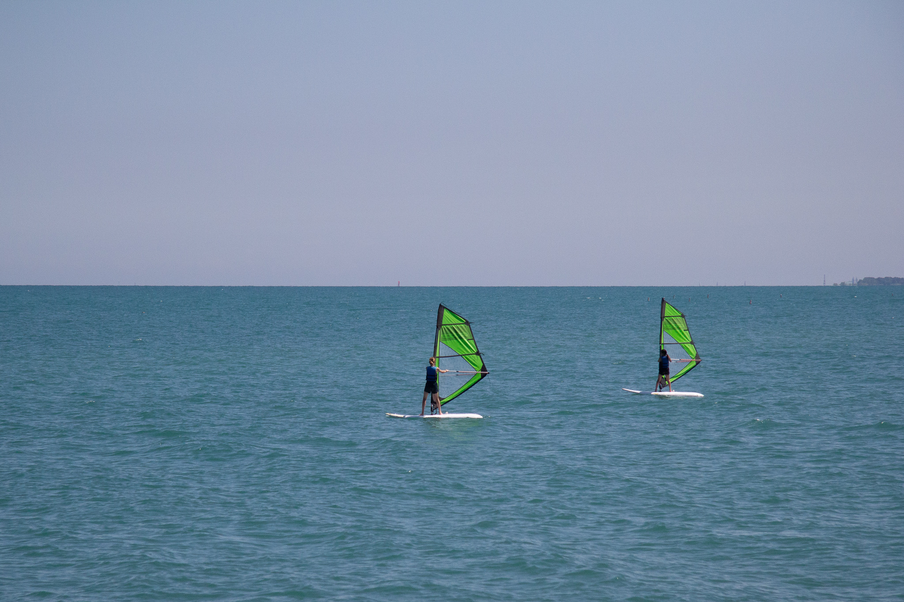

button
button2
 While off at summer camp a young girl was asked what activities interested her. Even though she had never done it before, on a whim she signed up for windsurfing.
While out on the lake she fell in love with the activity and knew that she would want to continue to windsurf when she got home.That is when she found the Northwestern Sailing Center.
Now, ten years later Lily Allen is working as a counselor for the Northwestern Sailing Center. This is her third Summer teaching windsurfing for both youth camps and adult classes.The youth camps have an age range of 9 to 15-year-olds. According to Allen, she wanted to do something that allowed her to be outside and work with kids.
“My whole life I spent all my summer going to camps,” Allen said. “And then I really fell in love with windsurfing, and went to a lot of windsurfing camps.”
Windsurfing is an individualized sport. Each participant uses their own board and sail, the sizes of which depend on the person themselves and the type of weather conditions they go out in. While windsurfers are out on the water, there is no one to guide them but themselves.
“You are by yourself, controlling your own directions, you have to be able to look up,” Allen said. “The greatest danger, is just forgetting to be aware of where you are.”
Windsurfing can also be a dangerous sport because of the weather. Depending on the size and experience of the rider, some weather conditions make it more hazardous to go out on the water.
The Northwestern Sailing center monitors a radar so that they can keep everyone who rents their equipment safe. Including experienced riders who go out in more extreme conditions.
“It's about getting a chance to experience more exciting conditions, that you might not want to experience on, like, a sailboat,” Allen said.
The director of the Northwestern Sailing Center, Tadhg Martin, is far more experienced in sailing. His parents introduced him to the sport at 5-years-old and he has been sailing ever since.
“We're the only place that I know of on this side of the lake that teaches windsurfing,” Martin said. “And no matter if you're affiliated with Northwestern or not, we're open to everybody.”
One person who benefits from the open to all policy is one of their youth camp participants, Elsa Plumb. She was first introduced to windsurfing when she was walking along the lake when she was 11-years-old. She noticed some children at the beach who were windsurfing and knew that she wanted to try the sport as well.
After her mom found a winter aquatics program, Plumb decided to sign up for it with her friends. She now, at 13-years-old, attends summer camp at the Northwestern Sailing Center where, for two and a half hours in the afternoon, she windsurfs on Lake Michigan.
“I like the people, and I really like water,” Plumb said. “(Windsurfing) kind of feels like you're flying when you are going really fast.”
From the first day of camp all of the students, whether it is their first time or tenth, begin their training in the water. Allen along with the other counselors then introduce new learners to bringing up the sail, basic steering and balancing on the board.
New students are expected to fall in the water constantly and by the end of each day of camp they are probably going to be wet. According to Allen, a common mistake a lot of people will make is leaning into the sail rather than away from it, which causes them to fall into the water more often.
After the first lesson Allen and other counselors teach the students different maneuvers that help them to be independent while windsurfing.
“I get to do it by myself and have a lot of control over what I’m doing,” Allen said. “And It’s a way to be active and take a break from everyday life.”